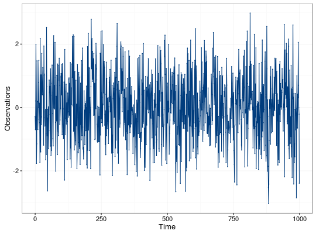
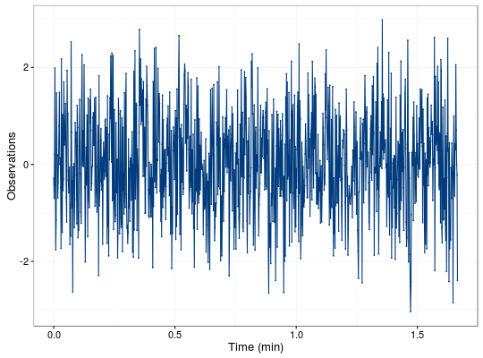

gen.gts(model, N = 1000, start = 0, end = NULL, freq = 1, unit = NULL, name = NULL)
ts.model or gmwm object containing one of the allowed models.interger containing the amount of observations for the time series.numeric that provides the time of the first observation.numeric that provides the time of the last observation.numeric that provides the rate of samples. Default value is 1.string that contains the unit expression of the frequency. Default value is NULL.string that provides an identifier to the data. Default value is NULL.gts object with the following attributes:
Create a gts object based on a supplied time series model.
This function accepts either a ts.model object (e.g. AR1(phi = .3, sigma2 =1) + WN(sigma2 = 1)) or a gmwm object.
# Set seed for reproducibility set.seed(1336) n = 1000 # AR1 + WN model = AR1(phi = .5, sigma2 = .1) + WN(sigma2=1) x = gen.gts(model, n) xObserved 1: -0.284459466019749 2: -0.699874162003114 3: 0.204571664351175 4: 1.98365781798293 5: -0.416823968700863 6: -1.76289389826499 7: -1.14770502564025 8: 1.47121165893088 9: 0.166286690785938 10: 0.194799225523839 --- 991: 0.997325055445442 992: -0.252874247856451 993: -0.648713054058071 994: 0.419159219223511 995: 0.305487040657869 996: 2.05263235547558 997: 0.703514076623703 998: -0.00293560033806073 999: -0.212692433942388 1000: -2.39183224129241
set.seed(1336) # GM + WN # Convert from AR1 to GM values m = ar1_to_gm(c(.5,.1),10) # Beta = 6.9314718, Sigma2_gm = 0.1333333 model = GM(beta = m[1], sigma2_gm = m[2]) + WN(sigma2=1) x2 = gen.gts(model, n, freq = 10, unit = 'sec') x2Observed 1: -0.284459466019749 2: -0.699874162003114 3: 0.204571664351175 4: 1.98365781798293 5: -0.416823968700863 6: -1.76289389826499 7: -1.14770502564025 8: 1.47121165893088 9: 0.166286690785938 10: 0.194799225523839 --- 991: 0.997325055445442 992: -0.252874247856451 993: -0.648713054058071 994: 0.419159219223511 995: 0.305487040657869 996: 2.05263235547558 997: 0.703514076623703 998: -0.00293560033806073 999: -0.212692433942388 1000: -2.39183224129241Unit of object is converted from sec to min
[1] TRUE